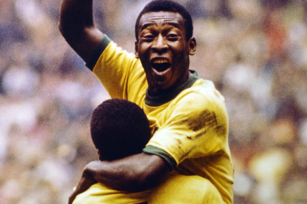

O futebol é um esporte coletivo jogado por duas equipes de onze jogadores cada. O objetivo é marcar gols, ou seja, colocar a bola dentro do gol adversário. O jogo é conhecido por sua popularidade global, habilidade técnica e por grandes competições como a Copa do Mundo.
Melhor jogador do mundo
Pelé é considerado um dos melhores jogadores de futebol de todos os tempos. Ele é conhecido por sua habilidade, velocidade e capacidade de marcar gols. Com uma carreira repleta de conquistas, incluindo três Copas do Mundo, Pelé é uma figura icônica no mundo do futebol e continua a inspirar fãs e jogadores ao redor do mundo.
